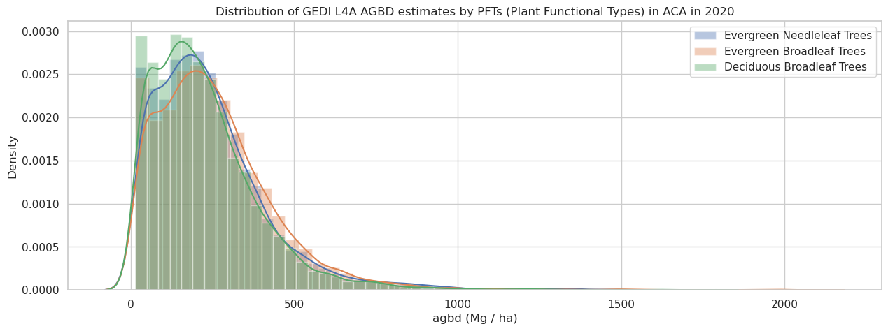

import earthaccess
import pandas as pd
import geopandas as gpd
import dask.dataframe as dd
import contextily as ctx
import netCDF4 as nc
from os import path
from matplotlib import pyplot as plt
from shapely.ops import orient
from IPython import display
from requests.adapters import HTTPAdapter, Retry
import seaborn as sns
sns.set(style='whitegrid')Distribution of carbon stocks in a protected area
Overview
The Global Ecosystem Dynamics Investigation (GEDI) Level 4A Footprint Level Aboveground Biomass Density (AGBD) dataset provides predictions of the aboveground biomass density (AGBD; in Mg/ha) and estimates of the prediction standard error within each sampled geolocated GEDI footprint. GEDI L4A dataset is available for the period starting 2019-04-17 and covers 52 N to 52 S latitudes. GEDI L4A data files are natively in HDF5 format.
This tutorial will demonstrate how to compute the distribution of carbon stocks or AGBD for a protected area using the GEDI L4A dataset.
Learning Objectives
- Use the earthaccess Python library to search for GEDI L4A granules for time and area of interest. The earthaccess library simplifies access to NASA’s Common Metadata Repository (CMR) Application Programming Interface (API).
- Use NASA OPeNDAP Hyrax to retrieve the GEDI L4A dataset. Hyrax allows direct access to selected variables for the dataset within the spatial-temporal bounds without having to download the whole data file.
- Compute distributions of AGBD across various plant functional types (PFTs) in a study area.
Requirements
1. Compute environment
This notebook can be run in any personal computing environment (e.g., desktop/laptops), on-premise solution (e.g., High-Performance Computing), or on the Cloud (e.g., Amazon Web Service). ### 2. Earthdata Login An Earthdata Login account is required to access data, as well as discover restricted data, from the NASA Earthdata system. Thus, to access NASA data, you need Earthdata Login. Please visit https://urs.earthdata.nasa.gov to register and manage your Earthdata Login account. This account is free to create and only takes a moment to set up. ### 3. Additional Requirements
This tutorial requires the following Python modules installed in your system: earthaccess, requests, netCDF4, datetime, dask, pandas, geopandas, contextily, shapely, seaborn. To install the necessary Python modules, you can run:
pip install -r earthaccess requests netCDF4 datetime dask pandas geopandas contextily shapely seabornImport packages
Access to NASA OPeNDAP requires NASA Earthdata authentication. We recommend authenticating your Earthdata Login (EDL) information using the earthaccess python library as follows:
auth = earthaccess.login(strategy="netrc") # works if the EDL login already been persisted to a netrc
if not auth.authenticated:
# ask for EDL credentials and persist them in a .netrc file
auth = earthaccess.login(strategy="interactive", persist=True)You're now authenticated with NASA Earthdata Login
Using token with expiration date: 10/28/2023
Using .netrc file for EDLSearch GEDI L4A granules
First, we will search for granules that overlay our area of interest. We will then access the location and science variables for the GEDI shots using OPeNDAP.
For this tutorial, we will use the boundary of Annapurna Conservation Area (ACA), the largest protected area of Nepal, to search for the overlapping GEDI L4A granules. The boundary polygon is available as a GeoJSON file at aca.json. Let’s plot the boundary polygon of the ACA over a basemap.
# read and plot ACA GeoJSON file
aca = gpd.read_file("https://raw.githubusercontent.com/ornldaac/gedi_tutorials/main/polygons/aca.json")
ax=aca.to_crs(epsg=3857).plot(figsize=(5, 6), edgecolor="red", alpha=0.3)
ctx.add_basemap(ax)
ax.set_title("Annapurna Conservation Area, Nepal")
plt.show()We will now search for all the GEDI L4A granules overlapping the ACA boundary polygon using the Earthaccess Python library. We will also limit the period of our search to the year 2020 (Jan 1 to Dec 31, 2020). The earthaccess’s search_data allows searching dataset granules using NASA’s CMR API. It requires the dataset digital object identifier (DOI), time, and the polygon coordinates as tuples.
# GEDI L4A DOI
doi = '10.3334/ORNLDAAC/2056'
# time-bound for the year 2020
start_date = "2020-01-01" # specify your start date
end_date = "2020-12-31" # specify your end date
# bounding lon, lat as a list of tuples
aca.geometry = aca.geometry.apply(orient, args=(1,))
# simplifying the polygon to bypass the coordinates
# limit of the CMR with a tolerance of .005 degrees
xy = aca.geometry.simplify(0.005).get_coordinates()
coord_list = [(x,y) for x,y in zip(xy.x , xy.y)]
granule_arr = earthaccess.search_data(
count=-1, # needed to retrieve all granules
doi=doi,
polygon=coord_list,
temporal=(start_date, end_date)
)Granules found: 59Now, the GEDI L4A granule information, including data URLs, is stored in granule_arr, from which we can create OPeNDAP URLs. We will use NetCDF-4 encoding in the HTTP requests as an NC4 file representation. Let’s print the first three granules from the list.
# create opendap urls from the granule links
opendap_base ='https://opendap.earthdata.nasa.gov'
opendap_url = f'{opendap_base}/collections/C2237824918-ORNL_CLOUD/granules/GEDI_L4A_AGB_Density_V2_1'
opendap_arr = [f'{opendap_url}.{path.basename(granule.data_links()[0])}.dap.nc4' for granule in granule_arr]
total_granules = len(opendap_arr)
# print the first three links
opendap_arr[:3]['https://opendap.earthdata.nasa.gov/collections/C2237824918-ORNL_CLOUD/granules/GEDI_L4A_AGB_Density_V2_1.GEDI04_A_2020009160947_O06097_02_T00100_02_002_02_V002.h5.dap.nc4',
'https://opendap.earthdata.nasa.gov/collections/C2237824918-ORNL_CLOUD/granules/GEDI_L4A_AGB_Density_V2_1.GEDI04_A_2020013143447_O06158_02_T04675_02_002_02_V002.h5.dap.nc4',
'https://opendap.earthdata.nasa.gov/collections/C2237824918-ORNL_CLOUD/granules/GEDI_L4A_AGB_Density_V2_1.GEDI04_A_2020024182123_O06331_03_T00197_02_002_02_V002.h5.dap.nc4']Access the variables of interest for the subset area
OPeNDAP allows access to the dataset of interest, so you can only download the variables you are interested in and, by doing so, save the download bandwidth. For this tutorial, we are interested in the following selected science variables (agbd, l4_quality_flag, and pft_class) for four full-powered beams of the eight GEDI beams. Refer to this tutorial for more information about GEDI L4A data structure.
# variables of interests
variables = ['agbd', 'l4_quality_flag', 'land_cover_data/pft_class']
# beams of interest
beams = ['BEAM0101', 'BEAM0110', 'BEAM1000', 'BEAM1011']
# setting header variables
headers = ['lat_lowestmode', 'lon_lowestmode', 'elev_lowestmode', 'shot_number']
headers.extend(variables)Now, we will retrieve the dataset from the OPeNDAP Hyrax server. Let’s set up a session and set the number of maximum retries.
# setting maximum retries for the HTTP sessions to get around the 500 error
session = earthaccess.get_requests_https_session()
retries = Retry(total=10, backoff_factor=0.1, status_forcelist=[ 500, 502, 503, 504 ])
session.mount('https://', HTTPAdapter(max_retries=retries))First, we will access the geographic variables (lat_lowestmode, lon_lowestmode) of all the GEDI shots within the beam to identify the shots overlapping the area of interest. We will then retrieve the science variables of interest (agbd, agbd_t, etc.) for the area of interest.
The following step will take some time to run as there are 59 granules to process. The figure below will update to indicate the download status.
# plotting the area of interest
ax=aca.to_crs(epsg=3857).plot(figsize=(5, 6), alpha=0.3)
ctx.add_basemap(ax)
ax.set_title("Starting download...")
display.display(plt.gcf())
display.clear_output(wait=True)
c=0
dfs=[]
# loop through all granule URLs
for g_name in opendap_arr:
c += 1
# loop through all beams
for beam in beams:
# 1. Retrieving coordinates for the beam
r = session.get(f"{g_name}?dap4.ce=/{beam}/lon_lowestmode;/{beam}/lat_lowestmode")
if (r.status_code != 400):
with nc.Dataset('hyrax', memory=r.content) as ds:
df = pd.DataFrame({'lat_lowestmode': ds[beam]['lat_lowestmode'][:],
'lon_lowestmode': ds[beam]['lon_lowestmode'][:]}) # creating pandas dataframe
# 2. Subsetting by bounds of the area of interest
# converting to geopandas dataframe
gdf = gpd.GeoDataFrame(df, geometry=gpd.points_from_xy(df.lon_lowestmode, df.lat_lowestmode))
gdf_aca = gdf[gdf['geometry'].within(aca.geometry[0])]
if not gdf_aca.empty:
# creating empty dataframe columns for variables
for v in headers[2:]:
gdf_aca[v] = pd.Series()
# 3. Retrieving variables of interest. Only retrieving GEDI shots within the subset area.
for _, df_gr in gdf_aca.groupby((gdf_aca.index.to_series().diff() > 1).cumsum()):
i = df_gr.index.min()
j = df_gr.index.max()
for v in headers[2:]:
r = session.get(f"{g_name}?dap4.ce=/{beam}/{v}%5B{i}:{j}%5D")
if (r.status_code != 400):
with nc.Dataset('hyrax', memory=r.content) as ds:
gdf_aca.loc[i:j, (v)] = ds[beam][v][:]
# creating a dask dataframe
dfs.append(dd.from_pandas(pd.DataFrame(gdf_aca.drop(columns='geometry')), npartitions=3))
# plotting the GEDI shots on map
gdf_aca.crs = "EPSG:4326"
gdf_aca.to_crs(epsg=3857).plot(alpha=0.01, ax=ax, linewidth=0)
ax.set_title(f"Downloading {c} of {total_granules}... {g_name.rsplit('/', 1)[-1][:-8]} / {beam}")
display.display(plt.gcf())
display.clear_output(wait=True)
Let’s concatenate the dataframes into a single pandas dataframe and print the first few rows. The concatenated dataframe now contains the subset data for the GEDI L4A shots within the ACA boundary, which can also be saved as a CSV file, as shown below (commented out).
# concating the dataframe
l4a_df = dd.concat(dfs).compute()
# uncomment the line below to output the data as a CSV file
# l4a_df.to_csv('aca_gedi_l4a.csv', index=False, header=False, columns=headers)
# printing the first few rows
l4a_df.head()| lat_lowestmode | lon_lowestmode | elev_lowestmode | shot_number | agbd | l4_quality_flag | land_cover_data/pft_class | |
|---|---|---|---|---|---|---|---|
| 69740 | 28.533718 | 83.651917 | 1334.218384 | 60970500200160455 | 2.014405 | 0 | 6 |
| 69741 | 28.534097 | 83.652311 | 1336.080078 | 60970500200160456 | 63.936985 | 0 | 4 |
| 69742 | 28.534474 | 83.652703 | 1344.832642 | 60970500200160457 | 18.22143 | 0 | 4 |
| 69743 | 28.534852 | 83.653096 | 1349.221069 | 60970500200160458 | 76.016953 | 0 | 4 |
| 69744 | 28.535227 | 83.653488 | 1362.543945 | 60970500200160459 | 23.200373 | 0 | 4 |
Distribution of AGBD in Annapurna Conservation Area
The pft_class variable provides the plant functional types for the shots derived from the MODIS land cover type product (MCD12Q1). It uses LC_Type5 or Annual PFT classification. We can now plot the distribution of the AGBD by plant functional types (PFTs) for the good-quality shots in the ACA region.
# MCD12Q1 PFT types
pft_legend = {0 : 'Water Bodies', 1: 'Evergreen Needleleaf Trees', 2: 'Evergreen Broadleaf Trees',
3: 'Deciduous Needleleaf Trees', 4: 'Deciduous Broadleaf Trees', 5: 'Shrub', 6: 'Grass',
7: 'Cereal Croplands', 8: 'Broadleaf Croplands', 9: 'Urban and Built-up Lands',
10: 'Permanent Snow and Ice', 11: 'Barren', 255: 'Unclassified'}
# creating a mask with good quality shots and trees/shrubs PFT class
l4a_df_masked = l4a_df[(l4a_df['l4_quality_flag']==1) & (l4a_df['land_cover_data/pft_class'] <= 5 )]
plt.figure(figsize=(15,5))
# drawing distribution plots
ax = l4a_df_masked.groupby('land_cover_data/pft_class')['agbd'].\
apply(lambda x: sns.distplot(x, label = pft_legend[x.name], hist=True))
plt.xlabel('agbd (Mg / ha)')
plt.title(f'Distribution of GEDI L4A AGBD estimates by PFTs (Plant Functional Types) in ACA in 2020')
plt.legend()
plt.show()
Let’s plot how the AGBD is distributed across elevation ranges for different PFTs.
# create 500m elevation bins
l4a_df_masked['elev_bin']=pd.cut(l4a_df_masked['elev_lowestmode'], bins =range(0, 5000, 500))
# drawing categorical plot
g = sns.catplot(x = "elev_bin", y = "agbd", data = l4a_df_masked, col="land_cover_data/pft_class", kind="box")
g.set_xticklabels(rotation=90)
g.set_titles("{col_name}")
for ax in g.axes.flat:
ax.set_title(pft_legend[int(float(ax.get_title()))])
g.set_axis_labels("Elevation (m)")
sns.despine(top=False, right=False, left=False, bottom=False, offset=None, trim=False)
plt.show()Additional tutorials on discovering, accessing, and using GEDI Level 3 and Level 4 data products are available at https://github.com/ornldaac/gedi_tutorials.